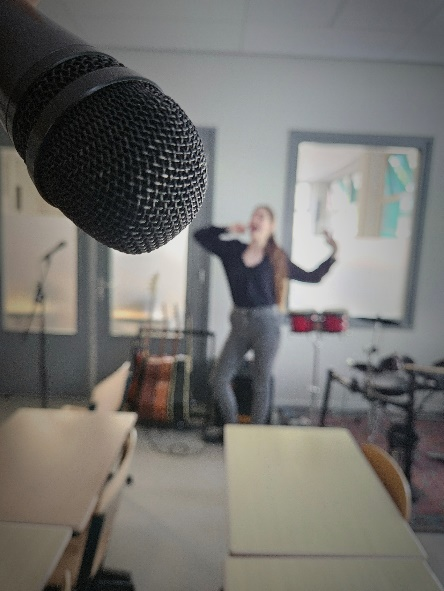
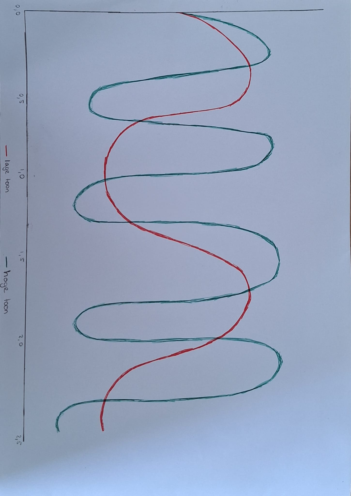
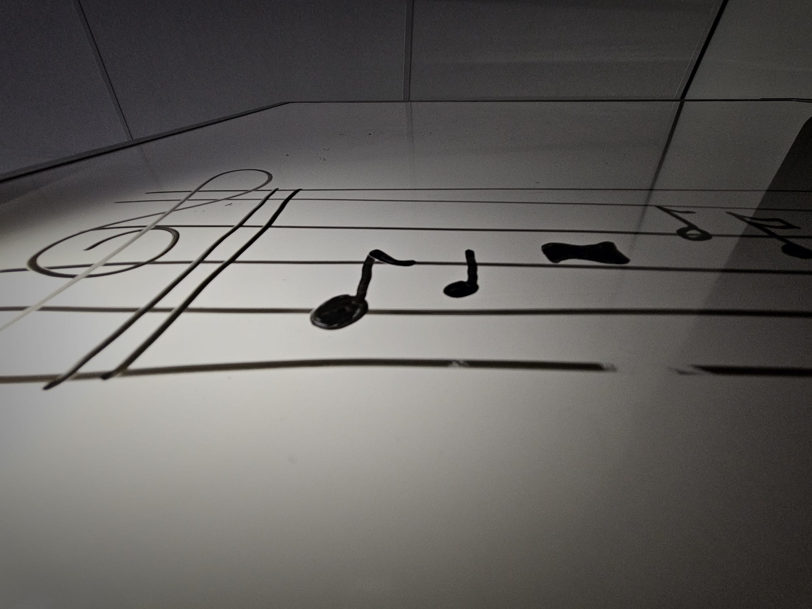
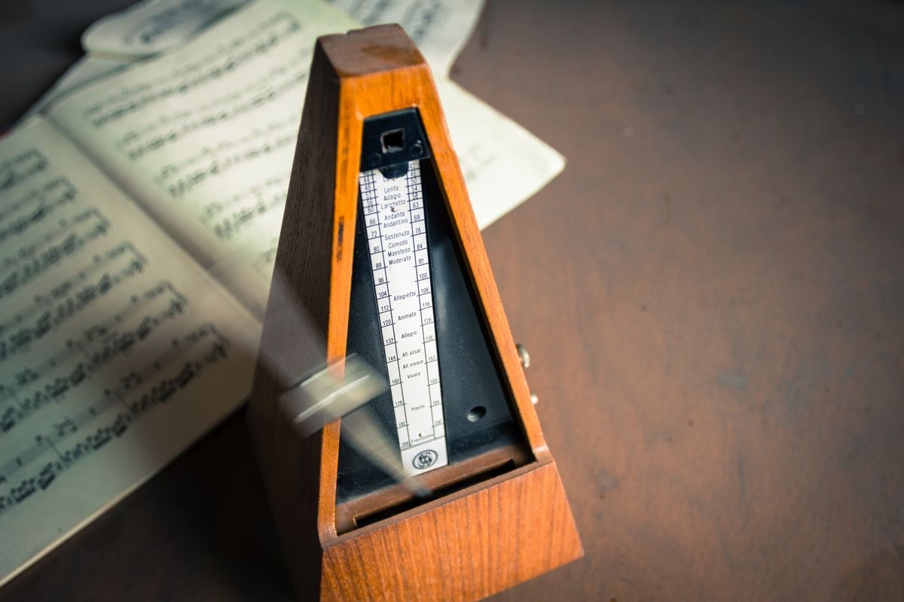
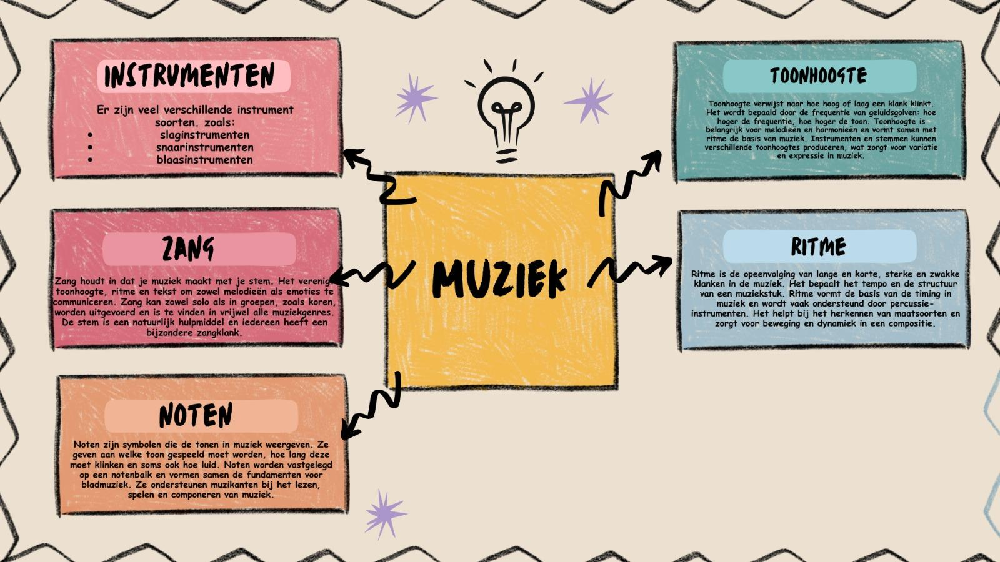

Photo 1
In this picture you can see an instrument. It is a piano that contains black and white keys. These keys produce tones. The piano is a beautiful instrument with beautiful sounds. You tell a story by playing the piano. You are drawn to the picture as well. You feel as if you are really standing and watching a live performance of a pianist. As if every moment someone will stand behind the piano, playing a song. The piano is the most played instrument in the Netherlands. Therefore, you often hear it in Dutch songs. It is an important element of Dutch music in both classical music and pop music. It can produce a wide range of sounds from soft and sensitive, to very powerful. This has a positive effect and influence on people. You can always tell your story by playing the piano. It has a positive effect on people.
Photo 2
In this picture you see a microphone and somebody singing. So it is about the singing. When I look at the picture, I see a girl who is singing her lungs out. I feel she is enjoying herself and doing this every day. She enjoys singing and shows it through her attitude, she stands there with confidence. The feeling that you can hear her if you listen carefully is evoked by this photo. The photo almost feels like it comes to life because you are drawn to the picture. Singing is using your voice in a musician way. Singing is very important in Dutch culture and music. That is because it is the way to tell your story, express your feelings and connect people through music. You can tell your story by singing. You don't have to talk about your feelings if you do not want to, because singing brings people together and lets you express your feelings.
Photo 3
This picture shows a drawing of two musical sound waves. The green wave is referred to as "hoge toon" (high tone), while the red wave is called "lage toon" (low tone). Time is found in milliseconds on the horizontal axis. The green wave has more and faster curves than the red wave, which has fewer and wider lines. This indicates that the green wave moves faster and thus has a higher frequency (high pitch) while the red wave moves slower and thus has a lower frequency (low pitch). Pitch is a key component in music. Slow vibrations make low tones recognizable, such as those produced by a drum or bass. Vibrating at high speed are high tones, such as those produced by a violin or flute. We can see what we often only hear by looking at this drawing: the difference between high and low musical notes. Higher-pitched notes have more sound waves per second, as the drawing illustrates. Understanding the relationship between pitch and sound is helpful in music instruction, particularly when learning about instruments and tone variations.
Photo 4
In the photo, you see notes from sheet music. Each note is different. The notes have different shapes, some are black with a stem, others are white or connected with a beam. On the left side of the staff, you see a clef, which shows which pitch the notes should be read in. The measures are divided by lines. One measure contains a total of four seconds. Between the notes, you might also see markings that tell how loud or soft the music should be played, and sometimes you can see a rest. That has a shape that looks like a minus. This photo brings up the image of music that is yet to be played. It's about the language of music. It looks like a story that’s written down. It’s like the structure of a song. You don’t see sound, instruments, or vocals. This small piece of paper is the beginning of something beautiful. You can imagine someone practicing this piece, or that it will soon come to life on a stage. The photo shows that even though it looks simple, it will become something beautiful.
Photo 5
Music is very important in the Netherlands, and you hear it everywhere. There are many different types of music, from Dutch rap to dance music, and from pop to traditional folk songs. One thing that you see in almost all of them is rhythm. Rhythm makes music sound good. It’s like the "beat" you can clap or dance to. Even in older songs, rhythm plays an important role. We're specially talking about older or traditional Dutch music. These songs often have a calm and clear rhythm, so everyone can easily sing along. The rhythm explains the emotion in the lyrics and makes the song recognizable. That means that rhythm is an important part of music in the Netherlands. It brings structure, movement, and feeling. If you're listening to a calm song or a pop track, it’s the rhythm that brings you through the music. It’s something everyone can feel, even if you don’t play a musical instrument or know anything about music theory. That’s why rhythm is so important, in all kinds of music, and especially in the Dutch music industry.
Infographic
